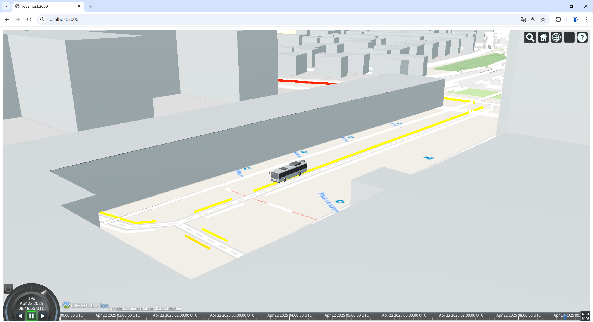
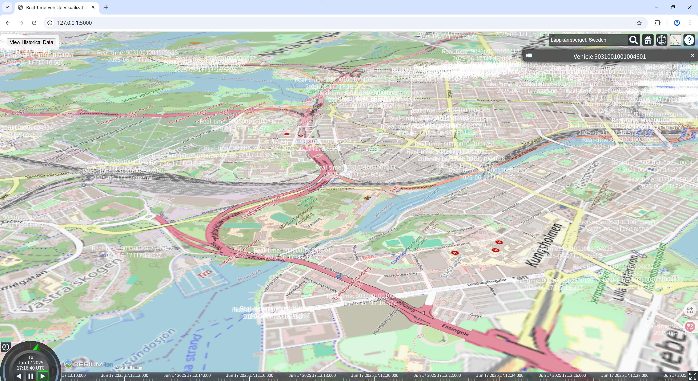
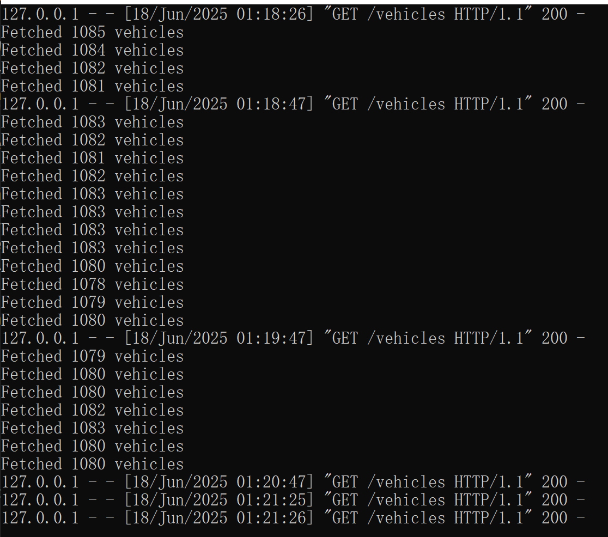

Frontend Layer
In the following we will describe the visualization component of the PT DT development pipeline.
GTFS Simulation visualization
We selected Node.js as a backend framework for the visualzation platform. This JavaScript backend allows CesiumJS to be ran locally.
Input:
OSM building data (GeoJSON/CityGML) - CesiumJS 3D Building Service.
CZML files (from SUMO simulations or historical real-time data).
CesiumJS requests for visualization.
Function:
3D Building Service
Serve OSM buildings as 3D tiles. When uploading CityGML, calling data through Cesium ion will convert it directly into 3D Tiles format.
CZML Visualization
Both SUMO’s simulation results based on GTFS static data and the visualization of trajectory data from GTFS historical real-time data can be achieved through CMZL format
Output:
3D buildings’ visualization in CesiumJS
Visualization of dynamic vehicles in CZML format in CesiumJS（SUMO simulation and historical real-time data
Detailed Steps:
Install Node.Js
Initialize the project to generate the package.JSON file.
cd src\frontend\server
npm init -y
We need to install some common libraries to support GTFS data parsing in this folder.
npm install express node-fetch gtfs-realtime-bindings
npm install cesium@^1.68.0 compression@^1.7.4 express@^4.17.1 heatmap.js@^2.0.5
Afterwards, there are mainly three files that are responsible for the the web-based visualization.
src/frontend/server/server.js: Express serversrc/frontend/server/Public/index.html: Main PageProvide HTML skeleton and create a full screen container (cesiumContainer) for rendering the 3D Cesium maps
Introduce CesiumJS library and its style sheets for 3D geographic visualization.
Load custom script loadCesium.js to handle map data loading and interaction logic.
src/frontend/server/Public/loadCesium.js:Initialize CesiumJS map view, configure base map and controls.
Load and integrate multiple data:
CZML format data: includes 3D models (such as vehicles) and edge-level data
Cesium ion asset: Load 3D models of Kista (buildings, etc.) from the Cesium platform
It is important that you need to enter your own Cesium API key in the first line.
Cesium.Ion.defaultAccessToken = '';// Your API Key
Before the visualization, we need to prepare for the vehicles, roads and buildings data. In
src/frontend/server/Public/loadCesium.js, we can specify which data we want to import. The first step is to paste the two CZML files into thePublicfolder.For buildings visualization, you need to apply for an API key in Cesium Ion and upload the former CityGML files into it to get an IonAssetId. You can fill the API key and also change the value of IonAssetId in
src/frontend/server/Public/loadCesium.js.Then run the Node.js server:
node server.jsand navigate to http://localhost:3000/ to see the visualization
Real-time GTFS data visualization
We developed a seperate visualization script to visualize the streamed and historic real-time GTFS data.
The files for this visualization are located under
src/backend/gtfs_flask/static. Similar to the simulation data visualiztion described above you need to adjust a few inputs in theindex.html:
add the API Key to Cesium Ion
add Cesium object ID
Then as described in the backend section of this documentation start the MongoDB server, run the
src/backend/gtfs_flask/app.pyto retrieve the GTFS data from the API, and open theindex.html`` located insrc/backend/gtfs_flask/static/index.html```As a result you will see the real-time positions of the Public Transport vehicles in the Cesium-based visualization:

In the picture, real-time buses are displayed. The textual information records the IDs and timestamps of buses. If you want to end this process, you can directly use the control+c command line interface for app.py, and then close the database using the same way.